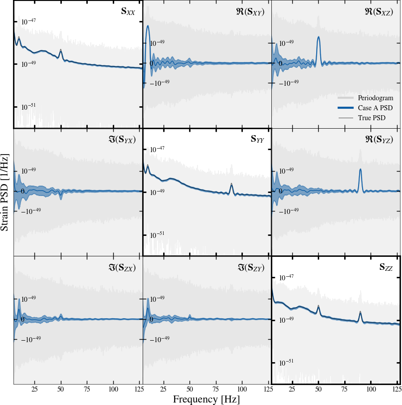
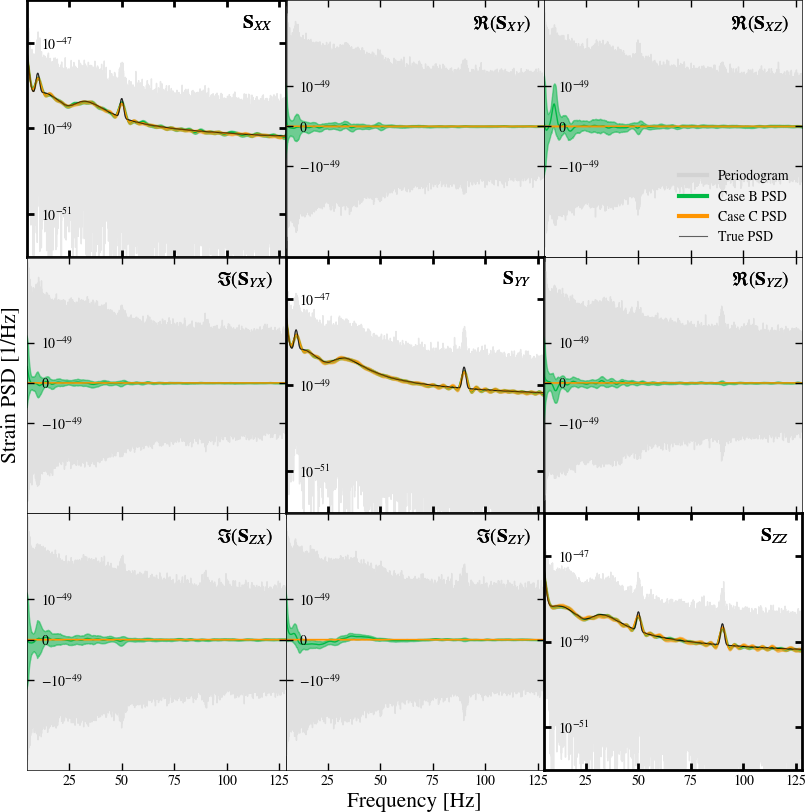

Paper plots#
The code below will generate the Case A,B and C PSD plots from the paper, as shown below:


For other plots, refer to the scripts folder in this works’ paper repository.
"""
Download the data from this work's Zenodo deposit
to the same directory as this script.
https://zenodo.org/records/13789536
"""
import h5py
import matplotlib.pyplot as plt
import numpy as np
from sgvb_psd.postproc.plot_psd import plot_psd
RESULT = "ET-caseABC-SGVB-PSD.h5"
DATA = dict(
A="ET_caseA_noise.h5",
B="ET_caseB_noise.h5",
C="ET_caseB_noise.h5" # Case C uses the same data as case B
)
class Case:
def __init__(self, case):
self.case = case
self.result_fn = RESULT
self.data_fn = DATA[case]
self.psdq = self._load_estimated_psd_quantiles()
self.true = self._load_true_psd()
self.data = self._load_periodogram()
print("Loaded case ", self)
def _load_true_psd(self):
with h5py.File(self.data_fn, "r") as f:
freq = f['true_psd/freq'][:]
idx = (freq > 5) & (freq < 128)
psd = f['true_psd/psd'][:].T[idx]
# PSD is currnelty just the XX, YY, ZZ components
# make it a 3D array (nans for off-diagonal elements)
psd = np.array([np.diag(psd[i]) for i in range(psd.shape[0])])
return [psd, freq[idx]]
def _load_estimated_psd_quantiles(self):
with h5py.File(self.result_fn, "r") as f:
return [f[f'case{self.case}_psd_quantiles'][:], f[f'freq'][:]]
def _load_periodogram(self):
with h5py.File(self.data_fn, "r") as f:
freq = f['periodogram/freq'][:]
idx = (freq > 5) & (freq < 128)
return [f['periodogram/pdgrm'][:][idx], freq[idx]]
def __repr__(self):
return (
f"Case {self.case} ["
f"psdq: {self.psdq[0].shape}, "
f"true: {self.true[0].shape}, "
f"data: {self.data[0].shape}]"
)
def plot(self, axes=None, fname=None, **kwargs):
axes = plot_psd(
self.psdq, self.true, self.data, axes=axes,
xlims=[5, 128],
diag_ylims=[1e-52, 1e-46],
off_ylims=[-3e-47, 3e-47],
**kwargs
)
if fname is not None:
plt.savefig(fname)
print(f"Saved {fname}")
return axes
Case('A').plot(fname='caseA.png')
axes = Case('B').plot(color="C1")
Case('C').plot(axes, fname='caseBC.png', color="C2")